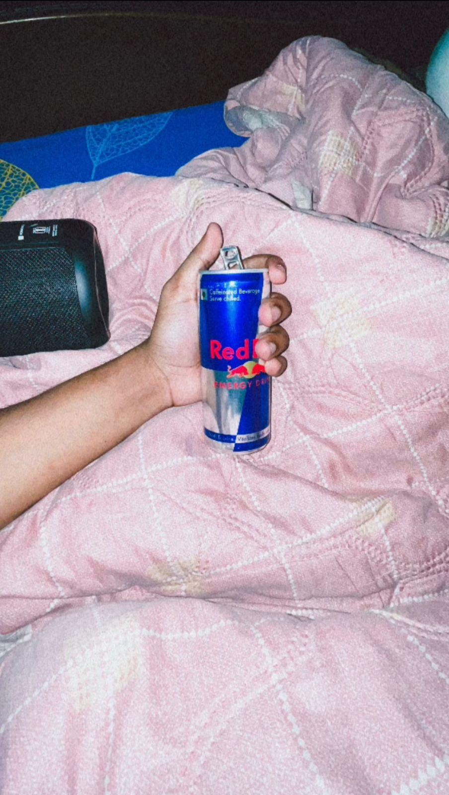

Notes

This laptop is not just a machine. It is my battlefield, my notebook, my studio, my silent friend. With
every click of the keyboard, I carve out pieces of my imagination. Sometimes it’s code — lines of logic
bending into new worlds. Sometimes it’s music — notes that rise and fall like hidden emotions. And
sometimes, it’s chaos — broken projects, failed experiments, half-finished dreams staring back at me from
the glowing screen.
Here, I write. Here, I learn. Here, I destroy and rebuild. The laptop carries the weight of my late nights,
the dust of unfinished plans, the glow of small victories. It listens when no one does, it reflects when I’m
lost, and it reminds me that creation never asks for permission.
With this laptop, I chase storms of curiosity, I fight battles with doubt, and I leave behind sparks that
may one day turn into fire. It is not just technology; it is the mirror of my restless mind.
And on this desk, under this light, with this laptop glowing in front of me — the story continues.

This Redbull is not just a drink; it’s my secret fuel for long coding and study sessions. Every sip gives me a burst of energy, sharpening my focus and keeping my mind alert. With the music from my speaker syncing in the background, ideas flow effortlessly, and the whole environment feels alive. It’s amazing how a simple can can energize me, push my limits, and make even the most challenging tasks feel achievable. Redbull in hand, speaker on, I feel unstoppable — ready to tackle anything and turn creativity into action. The energy boost from Redbull, combined with the music from my speaker, transforms my workflow into a state of flow. Each idea takes shape quickly, thoughts become clearer, and problem-solving feels effortless. Tasks that seemed daunting suddenly feel manageable, and the mind is fully engaged. This combination of caffeine, focus, and rhythm creates a momentum where creativity naturally turns into tangible results. It’s like turning sparks into fire — every action flows smoothly into the next, making even long hours productive and enjoyable. The environment becomes immersive, my senses sharpen, and I feel motivated, and fully incontrol of my work!

Sitting here with my brother under the soft glow of the blue light, both of us wearing our back-print T-shirts, I realize how rare and fun these moments are. We laugh over random things, sometimes argue playfully, but always end up cracking jokes that only we understand. Whether it’s sharing late-night snacks, messing around with gadgets, or just vibing with music in the background, these moments feel unrepeatable. The world outside fades for a while, and it’s just him and me, joking, teasing, and creating memories. It’s in these small, chaotic, fun-filled times that I feel the bond stronger — a mix of friendship, mischief, and brotherhood that nothing else can replace.

I am Ryuga Yagami, sitting in a dark room with my hands on my head. The light is a memory; shadows are my only company. My breath measures time in uneven waves. Street noise fades like an old song through thin walls. The chair creaks beneath me, patient and honest. Fingers press my scalp, feeling the pulse of a tired day. Ideas arrive like shards of glass — sharp but unusable. I close my eyes and find a map of regrets. There is clarity here, not loud but sharp. Silence allows one thought to grow heavy. A playlist hums; bass and memory mingle. I am both quiet and loud inside at once. This dark room holds only broken promises. I trace mistakes with my fingertips. Time slows and clings to small things. A cigarette of thought smolders unlit. The screen glows, a distant pale moon. Outside, the city moves; inside, I orbit myself. I hold this moment like fragile glass. My heartbeat writes its rhythm on my palms. Night allows honesty without applause. I think of names and the quiet ways they matter. The hands on my head are both guard and rest. Memories pass like slow trains. Sometimes the simplest truth is hardest to keep. The room is a pocket where nothing demands. I feel tired but awake, resting at the edge. Regret sits beside me, silent and patient. The darkness is not empty — it is me. I am Ryuga Yagami — awake, bruised, quietly ready.